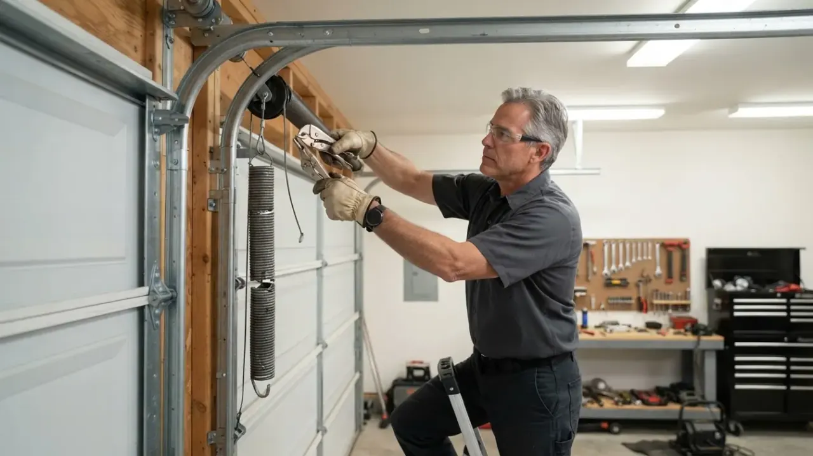

Fast, code-correct cable fixes for Hillsborough County homes
Garage Door Cable Repair in Tampa
A snapped cable drops one side of the door and traps the car behind it. Our garage door cable repair in Tampa runs same-day, with stocked trucks and a workmanship warranty behind every job. From South Tampa bungalows to New Tampa two-car garages, our techs fit galvanized steel cables, reset the drums, and run a full safety reverse test before they leave your driveway.
Live dispatcherUpfront optionsBacked workmanship
The basics
What Is Garage Door Cable Repair?
The lift cables are the steel lines that carry the door's weight as it rises and falls, and cable repair is the work of replacing them when they fray, slip off the drum, or snap. Once a cable lets go, the door tilts, jams, or drops on one side, and the opener cannot lift it safely on its own. Watch for a loose or hanging cable, a grinding sound, or a door that sits crooked in its tracks. Done properly, the repair means a new cable, a reset drum, and a door rebalanced so both sides lift together.
What's included
What Our Cable Repair Includes
One cable visit covers the parts and labour needed to get your door lifting safely again. If the inspection turns up a related fault, a worn drum or a tired spring, we quote it first and touch nothing until you agree. Here is what a standard call covers.
New Galvanized Steel Cables
We fit aircraft-grade galvanized steel cables cut to your door height and weight, one or both depending on wear. Diameter and length follow the manufacturer spec for your Clopay, Amarr, or Wayne Dalton door, not a one-size roll off the truck.
Cable Drum Inspection and Reset
Cables spool on the drum, and that groove is where fraying usually begins. We check the drum for grooves, rust, and wobble, then reseat or replace it so the fresh cable winds evenly from its first cycle.
Bottom Bracket Check
The bottom bracket is the anchor that holds the cable at the door. A bent or loose bracket lets the cable slip, so we look for cracks and corrosion and tighten or replace it before the door cycles again.
Spring Tension and Balance
We rewind the torsion spring to the right number of turns and balance the door so it holds at mid-travel. A cable job that skips the balance check leaves one side lifting harder than the other.
Safety Reverse and Sensor Test
For the safety check, a 2x4 goes under the door and we confirm it reverses within two seconds, then test the photo eye sensors. That UL 325 check is what keeps kids and pets safe.
Cleanup and Walkthrough
We haul off the old cable, wipe down the work area, and walk you through what we found. You see the worn parts and hear what to watch for, so the next failure does not catch you by surprise.
Service overview
What Garage Door Cable Repair in Tampa Involves
Garage door cable repair in Tampa is mostly a corrosion story. Salt air near the bay eats galvanized steel faster than inland air, and a cable that looks fine from the driveway can be frayed to half its strands where it meets the drum. Humidity works the same way on bottom brackets and drums, pitting the metal until the cable starts to jump its groove.
We stock galvanized steel cables for 7-foot, 8-foot, and 9-foot doors on every truck, so most Tampa cable repair services are finished in 90 minutes or less. Every job ends with a UL 325 safety reverse test and a balance check, because a new cable on an unbalanced door is a repeat call waiting to happen.

How we workWe verify the cause, compare realistic options, and confirm the repair before we leave.
The service timeline
What to Expect During Cable Repair
Cable work starts with the door held safely, not with the cable. These five steps keep a snapped-cable job from turning into a dropped door.
Phone Triage
We ask the door size, the brand, and what you heard or saw. A bang points to a spring, a slow tilt points to a cable, and a grinding noise points to the drum, so the answers shape what we bring.
On-Site Inspection
The tech checks both cables, the cable drums, the bottom brackets, and the torsion springs. A cable rarely fails alone, and the inspection finds the drum wear or spring fatigue that caused it.
Cable Replacement
We clamp the torsion tube, release tension with winding bars, and pull the old cable. The new galvanized cable is threaded through the bracket and drum, then tensioned to the correct turns.
Balance and Alignment
We run the door up and down several times, checking that it stays level and holds at the halfway point. If one side leads the other, the drums are reset until both sides lift evenly.
Safety Test and Walkthrough
Last step is the safety reverse test. We place a 2x4 under the door and confirm it reverses within two seconds, then test the photo eyes and walk you through what failed and what to watch for.
Tools & methods
Tools and Methods We Use
Cable repair is precision work around a loaded spring. These tools keep the job controlled from the first clamp to the final test.
Garage Door Torsion Spring Winding Bars
Steel winding bars are used to safely release and re-tension the torsion spring. No cable is touched until the spring is held safely, because a cable under load can whip.
Garage Door Cable Drums
Cable drums are the grooved spools that the cables wind onto. A grooved or rusted drum is replaced, because it will chew through a new cable in months.
Garage Door Winding Cones
Winding cones are used on extension spring systems to set cable tension. They lock the spring assembly in place so the cable holds its set length.
Garage Door Torque Wrench
A torque wrench lets us set the bottom bracket bolts and spring hardware to the correct spec instead of guessing by feel. Overtightened bolts strip; loose ones let the bracket shift.
Garage Door Roller Removal Tool
A roller removal tool pops worn rollers out of the hinge without bending the track. During cable work we check every roller, because a seized roller is often what overloaded the cable.
Garage Door Track Bender
A track bender straightens minor track dents caused by a falling door. A dented rail will bind the door and put uneven load back on the new cables.
Garage Door Sensor Alignment Tool
A sensor alignment tool lines up the photo eye sensors after the door has shifted. A cable failure moves the whole door, and the sensors need re-aiming before the door closes reliably again.
Use cases
When to Call for Cable Repair
Cable failures look different depending on the door and the weather. These are two of the jobs our cable techs handle most.

Cable Off the Drum in New Tampa
A two-car door in New Tampa kept throwing its cable off the drum every few weeks. → How we handle it: We find the drum is grooved and wobbling, replace the drum and both cables, and rebalance the door so the cables wind evenly.
Frayed Cables in Davis Islands
Salt air in Davis Islands had corroded both cables on a bay-facing garage until the strands were visibly frayed. → How we handle it: We replace both cables with galvanized steel, treat the drums for corrosion, and show the homeowner what to check each year.
Booking questions
Who repairs garage door cables in Tampa?
Call a garage door contractor (licence number available on request) that stocks cables and carries the right tools. We handle cable repair services Tampa wide, from Ybor City to Westchase, and we test the safety reverse before we leave. If you need a quote today, call us and we will tell you what the job involves.
Problems we solve
Cable Problems We Fix in Tampa
Cables fail in a few predictable ways, and each one points to a different fix. Here are the cable problems we see most on Tampa doors.
Snapped cable with the door stuck halfway
A snapped cable leaves the door stuck halfway, tilted, or dropped on one side. We replace the damaged cable and its partner, reset the drums, and rebalance the door before the opener runs again.
Frayed cable from salt air corrosion
Salt air corrosion frays cables from the inside out, starting where the cable meets the drum. We replace both cables and inspect the drums and brackets for the same corrosion.
Cable off the drum after a hard close
A hard close can throw a cable off its drum, and the door will run crooked from then on. We reseat the cable, check the drum for damage, and reset the tension so it stays on.
Door off track after a cable failure
A cable that slips or binds will grind and jerk the door. We trace the cause to the drum, bracket, or spring tension, and fix the source rather than just re-threading the cable.
Why it happens
Why did my garage door cable snap in Tampa?
Salt air, humidity, and age are the big three. Tampa's coastal air corrodes bare cable strands, and a door that opens 8 to 10 times a day wears them faster. A worn cable drum or a spring that lost tension also puts extra load on one side. If one cable snapped, the other is usually close behind.
Why did my garage door cable come off the drum in Tampa?
The most common cause is a broken spring, because when the spring fails the cable goes slack and slips off the drum. It can also happen if the door was forced, if the cable stretched with age, or if the drum itself is worn. Simply winding the cable back on is not a fix, because the underlying cause is still there, so a technician checks the springs, drums, and balance before putting the cable back.
About this service
Can I still use my garage door if one cable is broken in Tampa?
No, you should stop using it. With one cable gone the door hangs crooked, puts strain on the opener and the remaining cable, and can jam or drop. Unplug the opener so nobody runs it by accident, and do not try to lift the door by hand. Call for a cable repair, and the technician will replace the cable and check the springs and balance at the same time.
Can a frayed garage door cable be repaired?
No. A lift cable is a single length of galvanized wire rope, and once strands have frayed or the cable has stretched, it cannot be repaired back to full strength. Splicing or clamping creates a weak point that will fail under load. A damaged cable must be replaced, and both cables are replaced together, because the second has done the same number of cycles. A sound cable that has simply slipped off the drum can be rewound and seated correctly.
How do I know if my garage door cable is about to break?
Look for individual wire strands sticking out from the cable, rust or brown discoloration, and a cable that has gone slack on one side. The door will also tell you: a door that hangs unevenly, jerks as it moves, or has one side lower than the other has a cable problem. If you see any of these signs, stop using the door and call a technician, because a cable under tension can whip when it snaps.
Pricing process
Garage Door Cable Repair Cost in Tampa
$180 - $450 depending on scope
Number of cables
Replacing one cable runs $180 to $350; replacing both runs $250 to $450, and the pair is usually the better call because the surviving cable carries the same wear. Most Tampa cable jobs are done in 90 minutes, and the pair price is quoted upfront so you can decide with the full picture.
Door height and weight
An 8-foot or 9-foot door needs longer, heavier cable than a 7-foot door. Taller doors carry more cable tension, and the cable diameter has to match the door weight, or the new cable will stretch and fray early.
Drum and bracket condition
A worn drum or bent bottom bracket cannot stay, or the fresh cable will fray on it. Those parts add $40 to $120 to the job, depending on the door, and they are priced before the cable goes on.
Cost factors at a glance
| Cost factor | What affects the price |
|---|---|
| Typical range on this page | $180 - $450 depending on scope |
| Number of cables | Replacing one cable runs $180 to $350; replacing both runs $250 to $450, and the pair is usually the better call because the surviving cable carries the same wear. |
| Door height and weight | An 8-foot or 9-foot door needs longer, heavier cable than a 7-foot door. |
| Drum and bracket condition | A worn drum or bent bottom bracket cannot stay, or the fresh cable will fray on it. |
Ranges are the ones stated on this page; you get a written estimate before work starts.
Cost questions
How much does garage door cable repair cost in Tampa?
Most Tampa cable repairs run $180 to $350 for one cable and $250 to $450 for both, including parts and labor. The price depends on door height, cable type, and whether the drum or bottom bracket needs replacing. We give you a flat quote before we start, so the number you hear on the phone is the number on the invoice.
Customer reviews
What Tampa Customers Say
★★★★★
“Heard a bang in the garage on a Tuesday morning and my door was hanging crooked. Called at 8 a.m., tech was here by 11. He showed me the frayed cable and the worn drum, quoted a fair price, and had both cables replaced in about an hour. Door runs smoother than it has in years.”
★★★★★
“The salt air here destroys everything, and our cables were no exception. We had one snap and the other was ready to go. They replaced both, checked the springs, and tested the safety reverse. Clean work, no mess left behind, and the price matched the quote.”
★★★★★
“My opener kept running but the door would not lift. Turned out the cable came off the drum. They reset it, replaced the cable, and adjusted the travel limits on my LiftMaster. Also pointed out a noisy roller and swapped it while they were in there. Good honest service.”
Book with confidence
What to Look for Before You Book
Cable work is done around a loaded spring, so the company you book matters more than the price alone. Check these before you agree.
- Before any work starts, ask for the licence number and confirm it matches the company name on the quote.
- Ask whether one cable or both will be replaced, and the reason, before the work starts.
- Insist on a written price covering parts and labour, and ask how extra work found mid-job gets priced.
- Ask how long the parts and the labour are covered, and get that warranty in writing rather than as a promise.
- Check that the price covers a safety reverse test and a balance check once the cables are on.
- When the technician arrives, confirm the vehicle is marked and they can say which company sent them.
Do-it-yourself and safety questions
Can I fix a broken garage door cable myself in Tampa?
No. The torsion spring above your door stores enough energy to break bones or kill. Replacing a cable means releasing that tension with winding bars and re-tensioning it to the correct turns. Without a torque wrench and the right bars, you risk a runaway spring. This is one repair to hand to a professional technician.
Is a broken garage door cable dangerous?
Yes. The cables carry the weight of the door, and when one snaps, the door hangs unevenly and can come off its tracks or drop. The cable itself can whip when it breaks. Do not run the opener, do not try to lift the door by hand, and keep clear of the door until a technician has clamped it and released the spring tension safely.
Repair or replace
Cable Repair vs Cable Replacement: Which One Your Door Needs
When a cable is damaged, the question is whether it can be repaired or whether it must be replaced, and the answer is almost always replacement. A lift cable is a single length of galvanized wire rope, and once strands have frayed or the cable has stretched, there is no way to repair it back to full strength. Splicing, clamping, or tying a cable is not a repair: it creates a weak point that will fail under load, and a cable that fails under load can drop the door. The honest answer is that a damaged lift cable is replaced, not repaired.
What can be repaired around the cable is everything else. A cable that has slipped off the drum can be rewound and seated correctly, as long as the cable itself is sound. A loose bottom bracket can be tightened or replaced. A drum with a small groove can sometimes be reused, but a drum with a deep groove will wear a new cable quickly and should be replaced. The technician will show you the cable and explain whether the cable itself is sound or whether it needs replacing, and the price is agreed before the work starts.
- Damaged cable: a frayed, rusted, or stretched cable is replaced, never spliced or clamped.
- Slipped cable: a sound cable that has come off the drum can be rewound and seated correctly.
- Loose bracket: a bottom bracket that has worked loose can be tightened or replaced.
- Worn drum: a drum with a deep groove will wear a new cable quickly and should be replaced.
- Both sides: when one cable is replaced, the other is replaced too, because it has done the same work.
How long things last
How long do garage door cables last in Tampa?
Most lift cables last many years, but Tampa humidity and salt air can rust them faster, and a door that is used several times a day wears them sooner. A cable that is fraying, rusty, or stiff should be replaced before it snaps, because a snapped cable can let the door drop. A yearly tune-up is the easiest way to catch a worn cable early, since the technician inspects the cables on every visit.
Tampa factors
Why Tampa Humidity Is So Hard on Garage Door Cables
Galvanized steel cable is made to resist rust, but Tampa humidity is a hard test for it. The galvanized coating protects the steel underneath, but it wears through over years of use, especially where the cable bends around the drum and the bottom bracket. Once the coating is gone, the bare steel rusts, and rust thins the cable from the outside in. A cable that looks sound from a distance can be badly thinned where it bends, which is exactly where it is under the most stress.
Water makes it worse. Garages that take in water during storms, or that have a floor that stays damp, expose the bottom of the cable to standing water, and the bottom bracket is where cables most often fail. Salt air near the bay speeds the process up further. The practical defense is inspection: look at the cables every few months, especially near the bottom bracket, and look for fraying, rust, and slack. A cable that is caught early is a planned replacement. A cable that is ignored until it snaps is an emergency, and a door that drops.
- Coating wears through: the galvanized layer wears away where the cable bends, exposing bare steel.
- Rust thins the cable: rust works from the outside in, and a cable can look sound while badly thinned.
- Standing water: a damp garage floor exposes the bottom of the cable, where failures start.
- Salt air: homes near the bay see faster corrosion than homes further inland.
- Inspect regularly: check the cables every few months, especially near the bottom bracket.
Related services
Related Services

Garage Door Repair
General repair covers the whole system, not just the cables. If the door is off track, noisy, or binding as well, this is the service that fixes it all in one visit.
Garage Door Spring Repair
A broken torsion spring is a common reason Tampa doors will not open. We replace both springs as a pair, rewind with proper winding bars, and set tension with a torque wrench so the door balances correctly.
Garage Door Opener Repair
Openers that hum without lifting, trip the breaker, or lose remote pairing are common after power surges in Tampa. We repair LiftMaster, Chamberlain, Genie and Craftsman units and test the safety reverse before we leave.Ready when you are
Get Your Garage Door Cable Repair in Tampa Today
If a cable is frayed, hanging, or snapped, do not run the door again. Call now and we will get a technician out the same day with the right cables on the truck.

Talk with the local team
Request Garage Door Cable Repair
Call, text or email and a real person answers, day or night. Tell us what the door is doing and we will give you a price range on the spot plus the soonest arrival window. Most calls placed before mid-afternoon get a same-day visit anywhere in Hillsborough County.